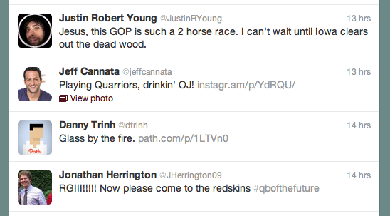
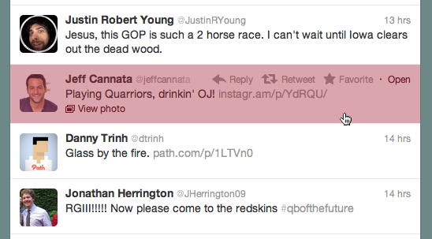
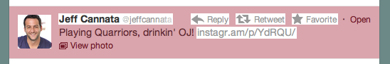
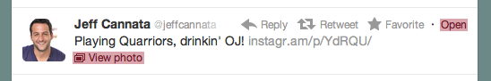

Hovering Tweets
I've noticed on the new Twitter web app a curious hover/click behavior. When you load up the website, you get a list of tweets, like so:
Then, when you move your cursor over one of the tweets, you see your pointer change to the hand (the universal symbol for clickable):
The highlighted red area is the clickable area, or at least it seems to be the clickable area. It's assumed that buttons are one solid shape (most likely a rectangle). But in this instance, there are links contained inside of the entire tweet, creating the button with holes.
This doesn't seem to be a problem, there is still plenty of area to click on the tweet after all. And it's unlikely you'll try and click the non-white space (à la the instragram link), but the white space changes upon hover. The “reply”, “retweet”, “favorite”, and “open” links don't appear until you're hovering over the tweet. So, as you're speeding your mouse cursor over the tweet to expand it, new links get in your way and cause and accidental and unpleasant click.
The design is similar to the iPhone and Android apps. The tweet is so small, and your thumb so big, that the entire tweet needs to be a button allowing you to perform actions on it. But the tweet is only one button, there are no links inside of it. This design pattern is brought over to the web app, but as it's on the web, links are added (since there's a lot more room).
I would leave the clickable areas at just:
The entire tweet will still be a hoverable area to reveal the “reply”, etc. links.
Minimizing the clickable area to expand the tweet sounds counterintuitive, but I think it would greatly ease the user experience. In this instance, the area isn't being modified as I'm moving my mouse.